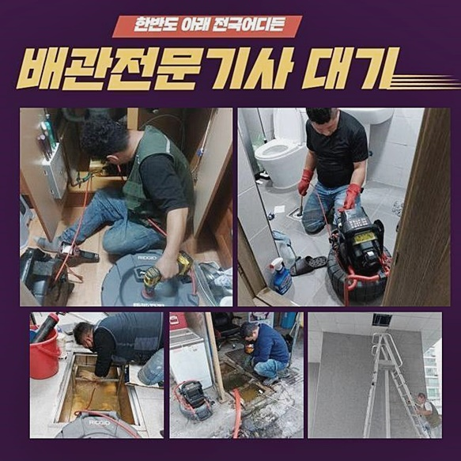
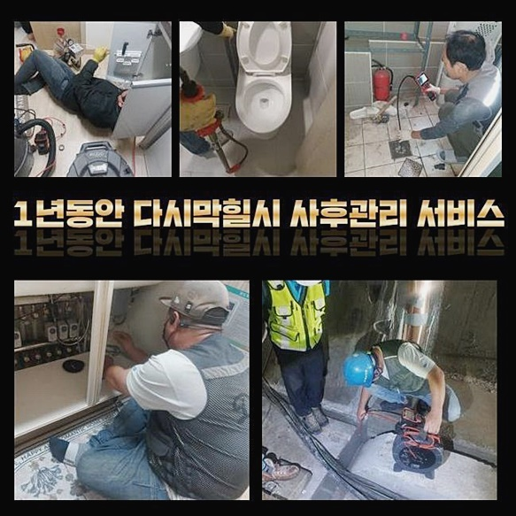
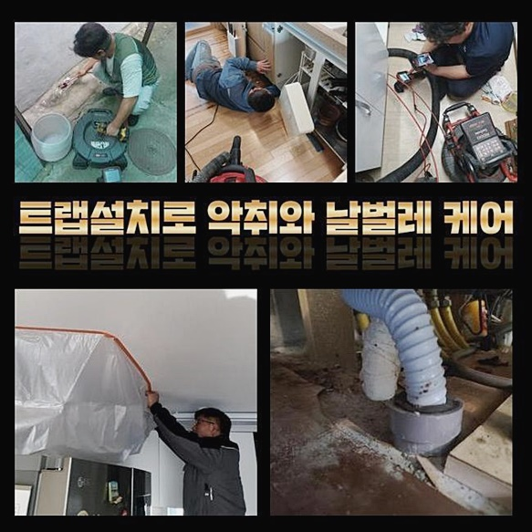
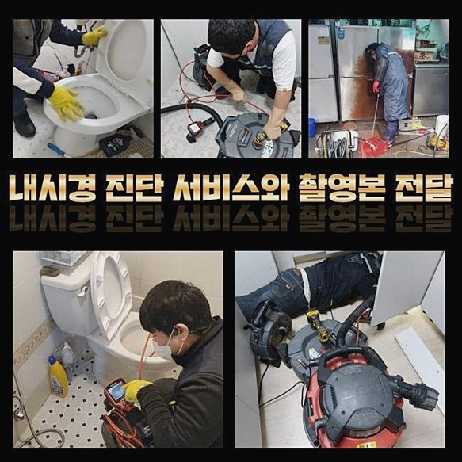
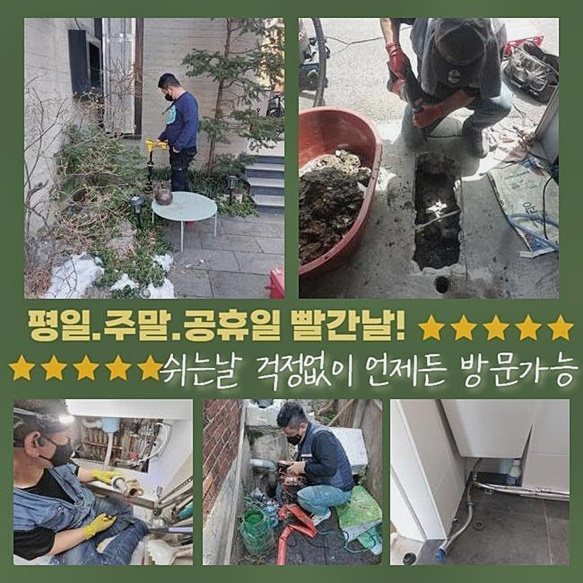
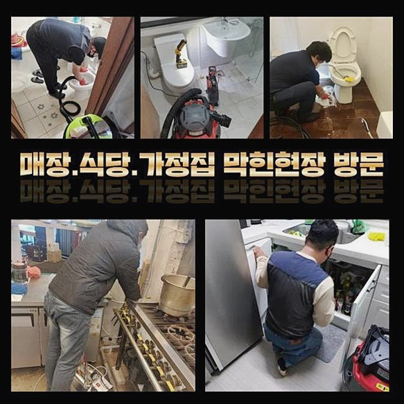
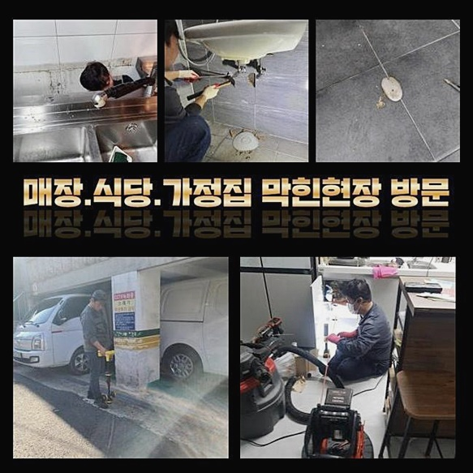

🏠 중랑구 묵동씽크대배수관막힘 면목본동 배수구뚫기 수리업체
용인시 처인구 배관막힘 전문 시공 후기

📋 작업 개요
- 위치: 용인시 처인구, 수원시 영통구, 화성시 동탄
- 서비스 유형: 배관막힘, 내시경점검
- 작업 일시:
- 업체명: 하수구수사대 (010-5615-2118)
🔍 문제 상황
중랑구 묵동씽크대배수관막힘 면목본동 배수구뚫기 수리업체
한 해 내도록 날씨와 무관하게 다양한 종류의 건물에서 하수설비의 곤란으로 다급하게 연락을 주시는데요
이번 케이스는 복잡다단한 하수구의 차단 건으로 인해서 고통받으신 고객님의 경험담을 함께 나눠볼까 합니다
단독이 아닌 복합 세대의 발코니 구조가 잘못된 것인지 통수가 아예 막혀버렸다는 이야기에 난처한 마음이 녹아있었습니다
세탁기를 가동할 때마다 저 아래로부터 물이 새서 물난리가 난 것만 같은 모습이라서 어찌할 바를 모르겠다 하셨죠!
막힘의 사유를 판별하고 비정상적인 설비로 인한 고충을 정상 궤도로 복구시켜 드리고자 작업지로 지체 없이 갔습니다
현장에 도착한 즉시 베란다의 겉과 속을 관측하면서 오늘 업무의 계획을 수립하게 되는데요
접수 시 알려주신 것처럼 세탁기가 있는 베란다의 바닥 관로가 막혀서 물이 세탁물이 넘실대는 사태임을 파악하게 됐어요
수질이 나쁜 물 속에는 섬유 찌꺼기같은 입자들도 잔뜩 들어가 있었고 물 비린내같은 역한 냄새도 같이 올라오고 있었네요
가벼운 오물과 잔수를 빨아당기는 석션기의 힘을 빌려서 엄청난 무게로 관로를 압박하는 물을 먼저 제거를 해주었어요
바닥뿐만 아니라 관로에 막고있는 물까지 동일하게 제거를 해서 뚜렷한 시야로 관찰할 수 있는 공간을 확보했습니다
낮은 확률로 단순 막힘은 석션만 운영해주더라도 충분히 해소가 되는 때도 있어요

🔎 원인 분석
💡 전문가 진단: 정밀 진단 장비를 사용하여 슬러지의 고착 여부를 판명하고 타격/세척 작업을 실시했습니다.
반복적으로 석션해 보고 물을 조금씩 내려보내면서 통수가 제대로 되는지 실험해 보기 시작했어요
물 높이가 제법 낮아지는가 싶었는데 결국 뚝 멈추는 모습을 보니 심하게 막혔다는 판단이 들었습니다
쉬이 끝낼 수 있는 사건은 아니라는 것이 생각이 되었기에 그 다음 단계로 넘어가기로 했습니다
관로 속을 관측할 수 있게 고안된 특성이 있는 배수관 기기인 내시경 장비를 알차게 쓰면서 고장이 나타난 사유를 추적해 나갔습니다
내시경 장비로 말씀드리자면 유연하게 휘는 노즐의 끝에 초소형 카메라가 설치된 디바이스로 의사들이 신체 기관을 검사할 때 사용하는 위 내시경 장비와 유사한 원리를 지니고 있어요
장비가 관측을 도와준다면 실제로는 보이지 않는 흑단처럼 깜깜한 파이프라인 내부에 도사리고 있는 위험 요소를 다 섭렵할 수 있게 됩니다
깊은 위치까지 배치한 뒤에 속사정을 분석해 보았더니 세탁기에서 나온 불순물과 말라붙은 섬유유연제까지 더해진 집합체가 발견되었습니다
절반 이상이 가로막히긴 했는데 아예 차단까지 부를 정도로 심각도는 아니라 보여서 추가 분석이 필요하다 판단했네요
내시경을 더욱 깊숙이 삽입해서 휘어진 형태의 아랫부분도 빠짐없이 검토했어요
관이 기다랗게 연결된 구조라서 원하는대로 현장 배관이 구불구불해도 유연하게 들어설 수 있는 장점이 있답니다
부엌 설거지대 밑의 하수관과 결합되어지는 방면에서 잘려진 호스 부속품이 뜬금없이 들어가 있었죠
개수대의 물을 운반하기 위하여 적용하는 주름관 호스의 잘려진 하나의 덩어리가 공간을 차지하고 있었어요
개수대에서 흘러 들어가서 쑥 빠지는 크기는 아니었기에 싱크대를 조성했던 시점에 길이를 맞추려 잘라낸 파편을 흘려보낸 게 들어간 듯 했어요

🔧 작업 과정
수용성도 아닌 물체들이 물 속에서 흔들리고 물이 쭉 누적되게 억제한다면 이 과정에서 하수관의 일부분에 스크래치나 균열을 만들다가 결국 파괴까지 부를 수 있습니다
통로에 이물이 떡하니 자리하다보니 물이 흐르는 길도 좁아지고 반대로 압박감은 더해지니 실내의 한곳이라도 물을 이용할 때 번번이 역행이 형성될 수 밖엔 없었겠죠
회전력 좋은 샤프트를 들여보내서 베란다 바닥부터 노폐물을 정돈해 나갔습니다
샤프트는 강력한 쇠사슬이 달린 충격 장치로 전원 버튼을 누르게 되면 강도가 단단한 쇠 파트가 제아무리 단단한 덩어리라도 분해합니다
내부에서 장기간 고착화되면 점차 견고하게 바뀌는데 흡입을 통한 장치만으로는 온전히 소거시킬 수가 없으니 자잘한 조각을 내어서 수습을 해야 합니다
이런 하수구 스케일링을 이어가는 중에는 내부 상황을 보는 내시경 역시 가동시키면서 통수 방해 요인이 대다수 몰려있는 측면 위주에 방점을 두고 철저하게 제거를 해나가요
물까지 약간씩 내려보내서 유연하게 분쇄되도록 해주고 소규모로 나뉘어진 물질과 기름질들은 석션을 통해 잔량없이 처리를 해줬습니다
의문이 남아있으셨던 고객님은 언제부터 주름관이 손도 닿지않는 깊이까지 흘러들어간 것인지 알다가도 모를 일이라며 억울한 기색을 보이셨어요
초기 설치시공을 받는 시절 인테리어 작업자들의 과오로 인해 물 막힘까지 촉발되었을 것이 거의 명백했고 사실 이런 경우가 종종 있어요
생활 중에 버리지 않은 물건이 하수구 막힘의 촉매제가 됐던 수도 없는 사례들을 같이 소개하면서 얼마든지 쉽게 일어날 수 있는 문제점이라고 말씀 드렸죠
생활 중에 써왔던 설비가 잘못된 동작이 보이면 자신에게서 불찰을 찾는 분도 꽤나 봤기 때문입니다
저희는 하수구를 고쳐온 빅데이터를 활용해 문제를 해결한 사례가 많다고 어필도 하면서 제대로 고쳐드리겠다고 약속드렸어요
막힘의 궁극적인 원인이던 주름 호스를 건져낸 후 보니 부속 길이가 상당해서 통로가 차단될 수 밖에 없었을 상황이었더라고요
특이한 불순물이 생겨서 물이 나갈 길이 축소됐는데 세탁실과 주방의 하수관이 연계된 구조라서 한 곳에서라도 생활용수를 사용하기만 하면 물이 솟구치는 현상이 이어지고 만 것입니다
여차저차해서 그렇다고 사연을 밝혀내자 갑갑함을 느끼셨을 고객님도 엄청 기뻐하시면서 조속히 정상화해달라 하셨네요
개수대 밑도 뚫음 작업을 해보니까 안에서 방출된 오염원의 수량이 상당한 정도였어요
집념으로 건져올린 찌꺼기를 일차적으로 투과시켜서 오염된 물은 오수관에 내려보내고 덩어리진 침전물들은 분리 배출을 해줬습니다!
도로 배수로에 쏟아 붓는다면 똑같은 막힘 증세가 형성될 수 있기 떄문입니다
쾌적한 관로 속으로 회복시켰다면 청소를 끝낸 싱크대를 주변부나 반대쪽 역시도 철저히 체크하면서 퀄리티를 높이려 애썼습니다
두번 째 장소인 베란다 바닥도 통수 검사를 실시했더니 콸콸 통쾌하게 배출 됨을 기다릴 필요없이 알게 됐네요!


✅ 작업 완료
초반 방문 때 발견했던 역류의 징후들도 이제는 등장하지 않는 측면도 세심하게 관찰해본 뒤에 깔끔하게 작업지를 치우고 향후 바람직한 관리법도 전수했습니다
예고도 없이 집안의 하수구가 마비되는 경우는 물을 활용하는 어떠한 장소에서건 나타날 수 있는 사안입니다
어느순간부터 물이 잘 흘러 내려가지 않거나 물이 반대로 솟구쳐 오르는 일이 일어난다면 일분일초라도 빠르게 곧바로 행동해야 합니다
여러 용도로 물을 쓰시며 어려운 제약 없이 스트레스를 받지 않도록 면밀한 분석과 대응으로 오류인자를 바로 잡겠습니다
하수구 관련한 모든 문제를 상담주시면 능숙하고 정밀한 서비스로 보답드리겠으니 확신을 갖고 맡겨주세요!




⚠️ 하수구 배관 막힘 예방 및 관리 가이드
- ✅ 머리카락, 비닐, 물티슈 등 물에 분해되지 않는 이물질은 절대 흘려보내지 마세요.
- ✅ 기름기 많은 식기는 설거지 전 키친타올로 먼저 기름때를 닦아내세요.
- ✅ 주기적으로 배수구에 뜨거운 물을 가득 부어주어 유지방 고착을 방지하세요.
- ✅ 작업 후 1년 이내 재발 시 무상 A/S 보증 서비스를 제공합니다.
💡 핵심 정리
- 확실한 장비 작업(내시경 점검 및 샤프트 스케일링)으로 원인을 뿌리 뽑습니다.
- 작업 후 1년 이내에 동일한 부위 재발 시 100% 무상 A/S 서비스를 보장합니다.
- 서울 · 경기 · 인천 전 지역에 24시간 언제든 긴급 출동할 수 있도록 항시 대기 중입니다.
❓ 자주 묻는 질문 (FAQ)
🚨 용인시 처인구 배관막힘 문제로 고민이신가요?
정확한 원인 진단과 확실한 시공으로 재발 없는 해결을 약속드립니다.
24시간 긴급 출동 | 서울 · 경기 · 인천 전지역 | 1년 내 재발 시 무상 A/S